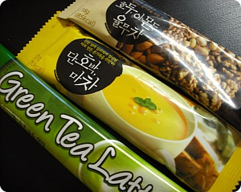
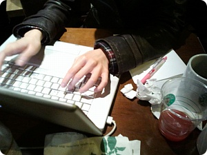

저번주 첨만난 new face M모씨와
금요일날 아쿠아리움을 가기로했었다.
워털루에서 4시쯤 만나서 아무생각없이 룰루랄라~티켓끊으러 갔는데
가격이 인터넷예약하면 15파운드
현장에서 구매하면 한사람당 30파운드 살짝넘는 가격...OTL
머시여 이건;;;;; 왜이리 차이가 나는거야 ;ㅂ;
Plan B를 외치믄서 캠던마켓가서 좀 돌구
다시 워털루로 돌아와서 남코센타에서 겜좀 하다가
M모씨가 미안하다믄서 저녁사줘서 낼름 얻어먹고 귀가^^;;
처음사람 만나게 되믄 주로 먹을거로 사람꼬시는 나(←;;)
그린티라떼 / 단호박마차 / 율무차
이건 일본칭구들은 물론 영쿡아가들에게 줘도 실패한적이 없다^^;;
(심지어 같은과였던 한명은 율무차 내가준거 다 마셨다고
어디서 사냐구 연락이와서 보내줬.........;;;)
저번주에 첨 얼굴본 기념으로 한국차라믄서 마셔봐~
이러고 저 세종류 2~3봉다리씩 손에쥐어줬는데
그린티라떼가 무척 맘에드는모양
맛난다구 고맙다면서
전에 준 tea랑 snack 너무고마워~맛있었어~라는데
.
.
.
.
.
.
.
.
응????
내가 tea를 준 기억은 있어도 snack은 준 기억이 없는데;;;
무슨snack??이라고 물어봤더니
한글은 못읽고;; 그린티라떼랑 마차는 사진으로 '마시는음료'라는게
명확한데 율무차 사진에는 곡물류가 잔뜩있으니까 snack인줄 알고
가루채 입에 털었댄다 ㅋㅋㅋㅋㅋㅋㅋㅋㅋㅋㅋ
악 ㅋㅋㅋㅋㅋㅋㅋㅋㅋㅋㅋㅋㅋㅋㅋㅋ
야;;; 그것도 그냥 마시는거야;; 인스턴트 커피처럼
뜨신물 부어서 마셔;;
라고 하니까
how foolish 라믄서 어쩔줄 몰라했다능 ㅋㅋㅋ
괜찮아 내가 영국와서 초반에 바보짓한거에 비하믄
이건 귀여운편이야~라고 위로해줬음 ㅋㅋㅋ
한국은 참 맛난게 많기도하지요////
그러고보니
평소 커피를 무슨 한약처럼 복용하는 인간인데;;
학교다닐때 계속 커피홀짝거리고 있으면
"머야~tea를마셔!! tea를!! 여긴 영쿡이야!!" 라고 시비걸었던
아가가 생각나는군요;; 그러고보니 얘도 M군이네;;
(죠~위에 율무차 보내달라고했던 ㅋㅋㅋㅋㅋ)
+
최근사진(?)

집 인터넷이 너무 자주 끊겨서
스타벅스에서 컴중인 나;;;
테이블위가 지저분하군요;; 쩝;;;;